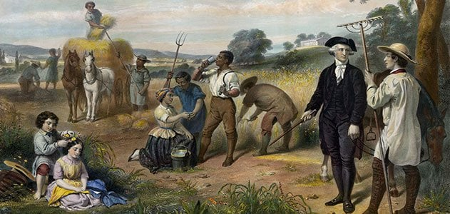

2023-02-09 08:00

It is Black History Month and there are a couple of streamed documentaries I heartily recommend: Jeffery Robinson’s Who We Are: A Chronicle of Racism in America (Netflix); and Nikole Hannah-Jones’s The 1619 Project, a six part docuseries (Hulu).
I watched Robinson’s film last night on Netflix and it is excellent. At the beginning of the film Robinson meets a man standing in front of a Confederate statue waving a Confederate flag. The two have a conversation about whether that flag was a symbol of slavery and even about the nature of slavery itself. The Neo-Confederate maintains that slaves were just like members of slave-holders’ families and his flag had nothing to do with slavery. But in less than a minute the Harvard Law-trained film-maker demonstrates the contradictions of the flag-waver’s contentions. This confrontation with willful ignorance frames the film’s narrative.
Robinson, who is from Memphis and whose personal story is interwoven into the documentary, goes on to show — using the words of politicians of the time, state and federal laws and rulings, and historical documents — that America most definitely was founded on slavery. He quotes former president Donald Trump — yes, America’s chief racist ignoramus and a fan of Jackson — who says that Andrew Jackson would never have let the US slide into civil war, then points out that Jackson died 16 years before that war. Robinson goes on to show that Jackson in fact was a slave-owner himself who even posted an ad for the return of one of his own slaves — promising to pay the finder a little extra for giving the slave 300 lashes with a whip. This is who is on our $20 bill.
We wait for Robinson to complete the sentence with “this is who we are” but his stealth title “Who We Are” instead does that job for him. Robinson not once mentions the usual bromide that White America uses on the occasion of some new racial atrocity (“this is not who we are”). Robinson just knows. And we all ought to know by now: this is exactly who we are.
In perhaps the most moving segment of the film Robinson, who worked with the ACLU for many years, returns to Memphis with his brother and visits their boyhood home — a house that had to be purchased with a little subterfuge by a white couple and then transferred to Robinson’s parents. He talks about how that home made him who he is today and how everyone on that street worked hard, did their best for their children, and had all the same hopes his parents did. It is not a bitter reminiscence, but Robinson points out that what white supremacy really means is that the playing field will never be level for everyone on that street — because of government institutions that created land-grant colleges for whites, redlining for blacks, land dispossession for indigenous people, and the recycling of slave-catching practices in police institutions. Robinson methodically shows us how many of our racialized institutions are still working as designed years after the Civil Rights movement ended. And the damage to their victims continues.
The 1619 Project has become a lightning rod for people who can’t accept that America was founded on slavery and continues to do everything it can to preserve slavery’s vestiges and inequities. FOX News predictably wrote the series off as “fan fiction” and “slander.” The New York Post called it “cartoonish” and a “pretense” and wrote off one of the interviewed academics as a “Marxist.” And of course, the 1619 Project has been banned in Florida by racist governor Ron DeSantis and his appointees to the state Board of Education.
The series consists of six episodes, the last of which will air tomorrow: Democracy; Race; Music; Capitalism; Fear; and Justice. While Jeffery Robinson never indicts Capitalism outright for the sins of slavery, Hannah-Jones does so explicitly and this is the most likely reason for her rough treatment. But let’s be honest: slavery was a commercial enterprise. The value of slave labor made Alabama, Mississippi, and Georgia among the richest in the nation. When slavery ended these states instantly ended up at the bottom of the American economic barrel because human capital (that is humans as property) had been instantly struck from the ledgers. And it wasn’t just Southern plantations which profited from the products of slave labor. Massachusetts textile factories depended on cotton that had been harvested for free by humans under the whip. The New York stock exchange, companies like Lehman Brothers, and insurance industries like AIG — as Robinson shows, too — fed off slavery and toyed with declaring themselves neutral in order to continue to profit from human bondage.
In what is most certainly one of the great ironies of history, while the 1619 Project has been banned and its use in Florida schools now constitutes a felony, it is now available in Germany — a country that knows something about white supremacy and book burnings — and is now ashamed of it.
The Frankurter Allgemeine Zeitung carried a review of the 1619 Project in its book section, pointing out that Americans are woefully (even willfully) ignorant of their own history. Andreas Eckert cites a 2018 Southern Poverty Law Center study which shows how ignorant of American history, particularly its ugliest aspects, American High School students are. Only 8% of American high schoolers could identify correctly the reason the Civil War was fought: slavery. Eckert quotes Yale history professor and Frederick Douglass biographer David Blight, who wrote the introduction to the SPLC’s “Teaching Hard History.” Blight observes that Americans always prefer to view our history in the most positive light, regarding ourselves as a beacon unto the world, bringing progress, freedom, justice, prosperity, and happiness to the benighted. This certainly seems to constitute the “patriotic curriculum” that Ron DeSantis is now about to jam down the throats of Florida public school students.
One of the greatest controversies over the 1619 Project is whether the American Revolution was fought (even in part) to preserve slavery. Hannah-Jones unapologetically says it was. In the same SPLC preface to “Teaching Hard History,” Hasan Kwame Jeffries writes, “In the Preamble to the U.S. Constitution, the Founding Fathers enumerated the lofty goals of their radical experiment in democracy; racial justice, however, was not included in that list. Instead, they embedded protections for slavery and the transatlantic slave trade into the founding document, guaranteeing inequality for generations to come.” It doesn’t take much to verify these facts.
For starters, 34 of the 47 signers — a majority — of the Declaration of Independence were slave owners. Among the most famous slave owners: George Washington, Benjamin Franklin, John Hancock, Patrick Henry, John Jay, Thomas Jefferson, James Madison, Benjamin Rush, John Adams, Samuel Adams, Alexander Hamilton, Thomas Paine, and (a distant relative on my mother’s side) Charles Carroll. So don’t even try to convince me these morally compromised men created a nation for all the beating hearts in it.
The Declaration of Independence has always rung hollow to Black people. Frederick Douglass delivered a scathing oration “What, to the Slave, is the Fourth of July?” Aside from its authors and its hypocrisy, the Declaration calls indigenous people “merciless Indian Savages” and whines that King George is inhibiting the theft of indigenous land.
William J. Aceves, in “Amending a Racist Constitution,” shows us precisely where slavery was baked into the Constitutional cake:
While the Constitution never uses the words “slave” or “slavery,” the shadows of these malignant words inhabit its text. Four constitutional provisions reflect a legal architecture that treats Black people as property. Two of these provisions are substantive, and two are procedural.
Article I, Section 2, Clause 3 is the notorious Three-Fifths Clause. This provision is used to determine the number of congressional representatives apportioned to a state as well as its corresponding tax obligations. Free persons, including those bound to service for a term of years, were included in the calculation of state populations. In contrast, slaves would be calculated as three-fifths of a person. Native Americans who were not taxed would not be included in these calculations. While the Three-Fifths Clause did not directly affect the rights of slaves, it served as clear evidence of their inequality. The Clause also had a profound impact on the power structure in Congress by providing slave states disproportionate political influence in the House for decades. Because of this, the slave states were even less inclined to end slavery.
Article IV, Section 2, Clause 3 represents the Fugitive Slave Clause. It provides that any person who escapes from servitude and flees to another state may not gain their freedom. Instead, that person must be returned to the custody of their owner. This clause was used on countless occasions to perpetuate slavery. Individuals who had escaped from bondage by crossing state lines were subject to capture and returned to slavery. Those who aided such efforts were subject to civil or even criminal liability. While there was some resistance to its application, this pernicious clause made anti-slavery states and the federal government complicit in slavery. This complicity even extended to the Supreme Court.
Article I, Section 9, Clause 1 limited the ability of Congress to adopt legislation prohibiting the migration or importation of slaves until 1808. Congress drafted around this restriction in 1803, when it adopted An Act to Prevent the Importation of Certain Persons into Certain States, Where, by the Laws Thereof, Their Admission is Prohibited. This statute was adopted at the request of the slave states, which were concerned with the rise of free people of color in the United States and viewed the successful slave rebellion in Haiti with trepidation. Four years later, Congress took a more significant step with the Act to Prohibit the Importation of Slaves Into Any Port or Place Within the Jurisdiction of the United States. While the statute was drafted to end the slave trade in the United States, the practice of slavery remained legal.
Finally, Article V addresses the process for constitutional amendments. These amendments can be proposed for state ratification by a two-thirds vote in both Houses. Alternatively, amendments can be proposed through a constitutional convention called by a two-thirds vote of the states. Either process then requires approval by three-fourths of the states. Reflecting one of the central compromises to the Constitution, Article V prohibited any amendment to Article I, Section 9, Clause 1 until 1808. Working in tandem, these provisions ensured that the slave trade would remain legal in the United States for at least twenty years.
In Robinson’s film, Black students sing the third stanza of the American National Anthem (“the Star-Spangled Banner”) by Francis Scott Key, a Maryland slave owner. This stanza sings of the depravity and deserved slaughter of slaves who try to escape:
No refuge could save the hireling and slave From the terror of flight or the gloom of the grave, And the star-spangled banner in triumph doth wave O’er the land of the free and the home of the brave.
And the last stanza implies that the republic is meant only for non-slaves:
O thus be it ever when freemen shall stand Between their lov’d home and the war’s desolation!
American Conservatives may be incensed at scholarship that at long last proves our nation was founded on and built by slavery, but there is no getting around the fact: it was. The battle for the nation’s soul may be on some people’s lips but it means little without recognition, repair, repentance, restitution — and major revision of our laws. But we can’t even begin if we can’t agree on facts of history that can be easily and objectively verified.
In our hearts of hearts we know the contents of our nation’s soul and who we are as a people. And, if we’re honest, it isn’t very pretty.
This is who we are.